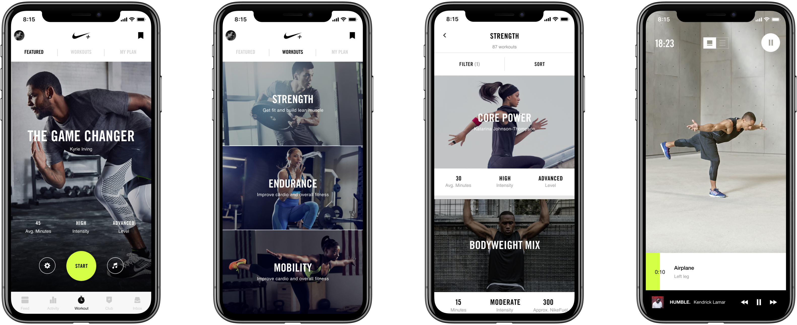
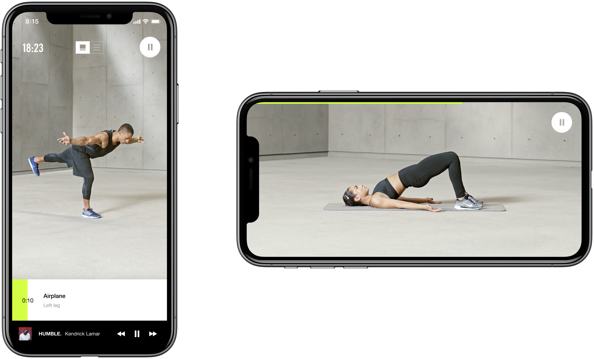
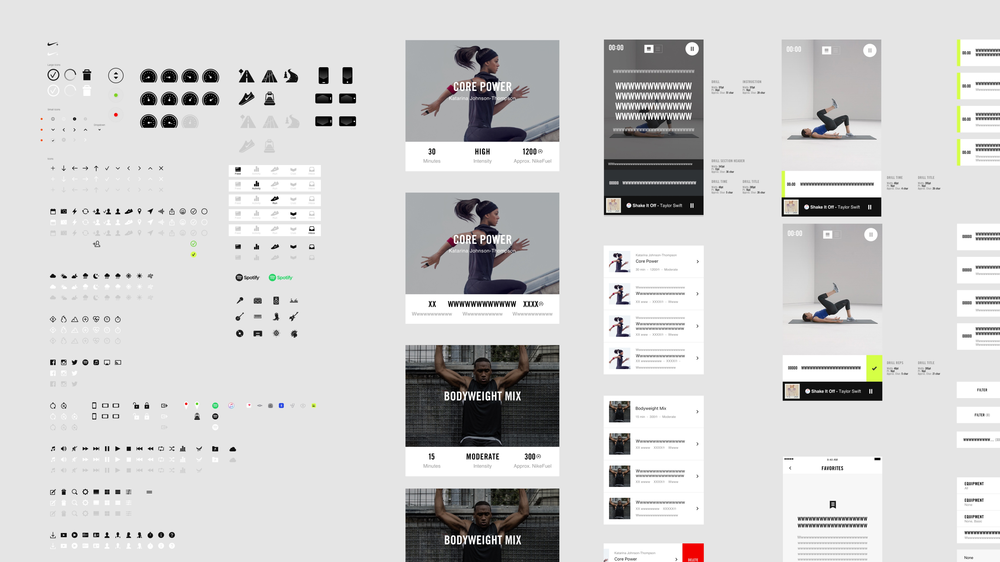

Evolving the Global Fitness Experience for a Diverse Audience
Nike Training Club (NTC) is a personalised fitness coach providing a library of over 200 workouts. Originally launched as a women-only product with a targeted offering, Nike sought to evolve the app into a comprehensive fitness platform for a global, diverse audience.
Our objective was to scale the app's features and content without losing the premium "Nike" feel. We needed to restructure the information architecture to support a wider variety of workout types, including the introduction of Yoga, while ensuring the interface remained intuitive and high-performing.
We operated as an extension of Nike's internal design team through a highly collaborative model of daily syncs and monthly co-locations. My focus was on Visual Logic and Navigation Architecture, ensuring that the expanded content remained accessible and aligned with the broader Nike digital ecosystem.

With the library growing to over 200 workouts, the legacy browsing flow was no longer efficient. Users were struggling to find sessions that matched their specific time constraints or equipment availability.
Solution: We restructured the IA into three core pillars: Strength, Endurance, and Mobility. I designed a refined filtering system that allowed users to sort by duration, intensity, and equipment requirements. This reduced cognitive load and ensured that users could move from the homepage to a started workout in seconds.

The existing workout template was built for gym-style intervals with frequent breaks. This "stop-start" interaction model was disruptive for the continuous, fluid nature of Yoga.
Solution: Working closely with Yoga instructors, we re-engineered the workout interface. We removed friction points and established a "flow-state" UI that allowed for a smooth, uninterrupted session. This proved that a single app could successfully house diverse fitness disciplines through adaptable interaction patterns.
The NTC app needed to feel like a member of the same family as the Nike commerce app and Nike Run Club (NRC), despite having its own specific functional requirements.
Solution: We established a rigorous alignment process with the global Nike design teams. By comparing visual treatments and sharing interaction principles, we ensured that the NTC UI remained consistent with the wider brand ecosystem while still pushing the boundaries of what a fitness-focused interface could achieve.

Following the success of the mobile release, we were tasked with adapting NTC for Apple TV (tvOS) to support the growing trend of home-based workouts.
Solution: We re-evaluated the interface through the lens of ten-foot UI design. By testing navigation with a remote control rather than a touchscreen, we designed a simplified, high-contrast version of the app. This ensured the experience was legible and easy to navigate from across a room, maintaining the "High-Finish" feel on a much larger canvas.
The redesigned NTC app successfully transitioned into a global fitness leader and remains a benchmark in the health and fitness category.
Market Reach: Surpassed 21 million downloads globally.
User Sentiment: Achieved an App Store rating of 4.8 from over 51,000 reviews.
Recognition: Awarded "Editor's Choice" on the Apple App Store.